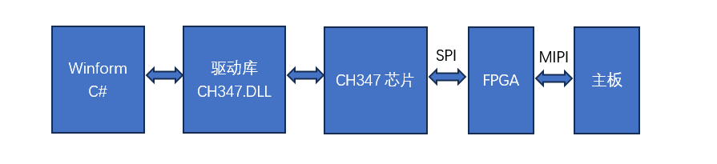
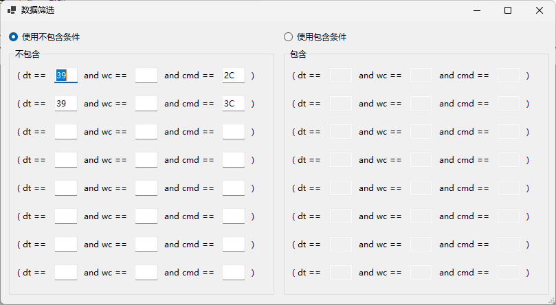
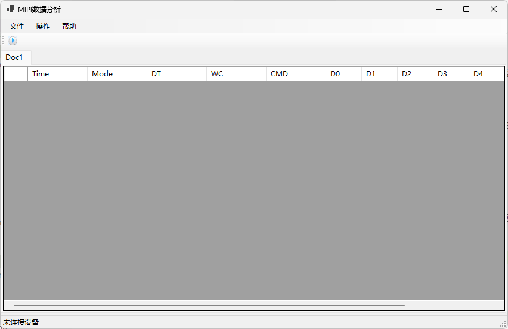

高速MIPI分析仪
前言
现在，手机主板和显示模组之间，基本都使用MIPI协议进行数据交换。MIPI协议有高速和低速之分。低速MIPI在20m左右，可以用逻辑分析仪进行抓取分析。而高速MIPI，是差分信号，并且速度达1G以上，逻辑分析仪就无能为力了。但是，在显示模组的调试和分析过程中，对高速MIPI的抓取和分析，又是必须的。所以，我们用FPGA和USB芯片，设计了高速MIPI分析仪，用FPGA抓取高速MIPI数据，通过USB芯片传到PC端，再进行分析。
实现方式
如下图所示，我们使用FPGA抓取MIPI信号，通过SPI传输给USB芯片CH347，PC端使用C#编写winform窗口软件，调用驱动库文件，对USB芯片进行读写。

FPGA
我们选取的FPGA集成了硬核DPHY，可以轻松抓取高速MIPI信号。还集成了PSRAM，可以用于缓存抓取的MIPI数据。
CH347
CH347是一颗USB芯片，可以实现USB和串口，JTAG，SPI和I2C的转换。我们使用CH347的SPI来和FPGA进行通信。CH347提供了在PC端的DLL驱动库文件。C#中调用驱动库文件来对CH347进行读写。
数据分析
数据筛选
高速MIPI数据速度快，数据量很大，全部都抓取的话是不现实的，所以我们使用了数据筛选。分别使用“包含”和“不包含”的数据筛选条件，很容易对数据进行筛选。

数据展示
我们把抓到的数据，解析出MIPI包的数据格式，命令等进行展示，很容易分析。

结论
高速MIPI信号由于是差分信号，并且速度很高，不能使用逻辑分析仪进行抓取分析。所以，我们用FGPA集成的DPHY来抓取高速MIPI信号，利用USB芯片传到PC端，进行直观的分析，让不可能成为了可能。